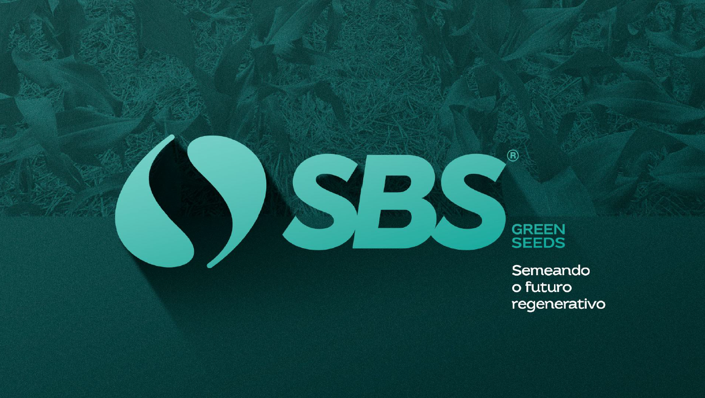

Apresentação à Diretoria
Tirar a operação da planilha — e colocar no controle.
A dor, a solução, o retorno esperado — e o que decidir hoje.
O problema
A operação vive espalhada — e sem rastro.
Informação em planilhas e conversas soltas. Ninguém sabe o que foi decidido, por quê, nem qual foi o retorno.
Demanda se perde
Pedido do campo sem dono, sem prazo, sem acompanhamento.
Decisão no achismo
Eventos e campanhas escolhidos sem dado real de mercado.
Retorno invisível
Feira e dia de campo sem medir custo × resultado.
Margem exposta
Descontos e aprovações sem controle nem rastro.
01
A virada
Mesma operação, outro controle.
Hoje
✕ Planilhas soltas e WhatsApp
✕ Demanda sem dono nem prazo
✕ Evento escolhido no achismo
✕ Retorno que ninguém mede
✕ Desconto sem rastro
→
Com a plataforma
✓ Tudo num painel, com histórico
✓ Demanda com dono, prazo e status
✓ Estudo de mercado antes de decidir
✓ Retorno medido em Resultados & Ações
✓ Desconto e aprovação com parecer
02
Uma demanda, do começo ao fim
Como uma ideia do campo vira resultado.
Um caminho único — cada passo fica registrado, ninguém precisa perguntar “onde parou?”.
1 · Campo
Supervisor pede
Material ou apoio, pelo próprio painel.
2 · Marketing
Lê e tria
Recebe a demanda registrada, com prazo.
3 · Inteligência
Estuda
Viabilidade, preço e região. Parecer.
4 · Vira ação
Campanha
Meta e catálogo de preço definidos.
5 · Vendedor
Prospecta
Cotação, visita e rota no painel.
6 · Gestão
Mede
Resultados & Ações: o Nacional lê tudo.
Da conversa no campo ao número na tela do Nacional — sem sair do sistema.
03
Não é mockup — está no ar
Ver funcionando, agora.
Plataforma publicada e rodando. Durante a reunião, entramos ao vivo e seguimos uma demanda, uma campanha e o mapa da equipe.
Endereço
painel-sbs.pages.dev
Um perfil por setor · dados reais no banco
O que mostramos
• Uma demanda entrando e sendo aprovada
• Uma campanha publicada no painel do vendedor
• O mapa da equipe ao vivo (CEO)
04
O sistema por dentro
Telas reais.
Do evento à campanha e ao acompanhamento do resultado — tudo no mesmo ambiente.
1 · Criação de eventos
Calendário compartilhado — qualquer perfil cria e envia para aprovação.
2 · Criação de campanhas
Meta, período, premiação e catálogo — editar, compartilhar ou encerrar.
3 · Acompanhamento
Faturamento × meta, vendas, leads, ticket e ROI em tempo real.
4 · Painel do vendedor
Mapa e carteira no campo — clientes, prospects, rotas e visitas.
05
Pronto para crescer
Escala, custo e segurança resolvidos.
Infraestrutura gerenciada de nível bancário, sem servidor próprio para manter ou invadir.
1.000+
usuários
Arquitetura preparada para o time todo, sem licença por assento.
~R$ 0→150
por mês
De graça no piloto; degraus previsíveis conforme o uso.
LGPD
por perfil
Cada setor vê só o seu, com log de acesso a dados pessoais.
Teste + Prod
separados
Banco blindado e backup automático. Nada quebra no ar.
06
Escopo claro
O que a plataforma é — e o que não é.
É para
✓ Prospecção de novos clientes por estado
✓ Gestão de demandas, campanhas e eventos
✓ Cotação de desconto e catálogo de preço
✓ Leitura da ação do campo (Resultados & Ações)
Não é
✕ Sistema de pedido / faturamento de venda
✕ Substituto do sistema comercial atual
✕ ERP ou controle de estoque
O pedido segue sendo tirado no sistema comercial. Aqui trabalhamos a prospecção e a gestão que leva até ele.
07
O que decidimos hoje
Aprovar um piloto.
1 parceiro · 1 região · período curto, com metas simples. Baixo risco, começa de graça, resultado visível em semanas.
Escolher parceiro & região
Definir metas do piloto
Treinar a equipe e começar